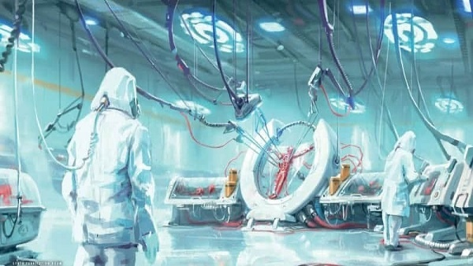
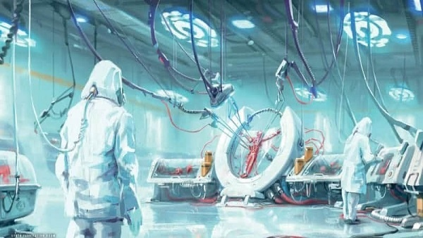
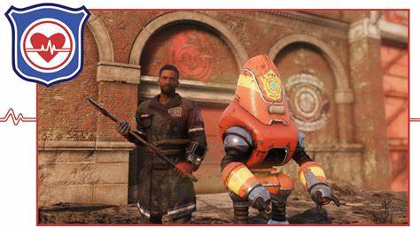
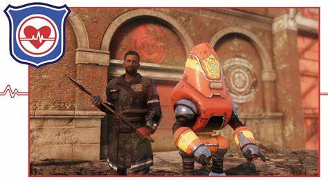
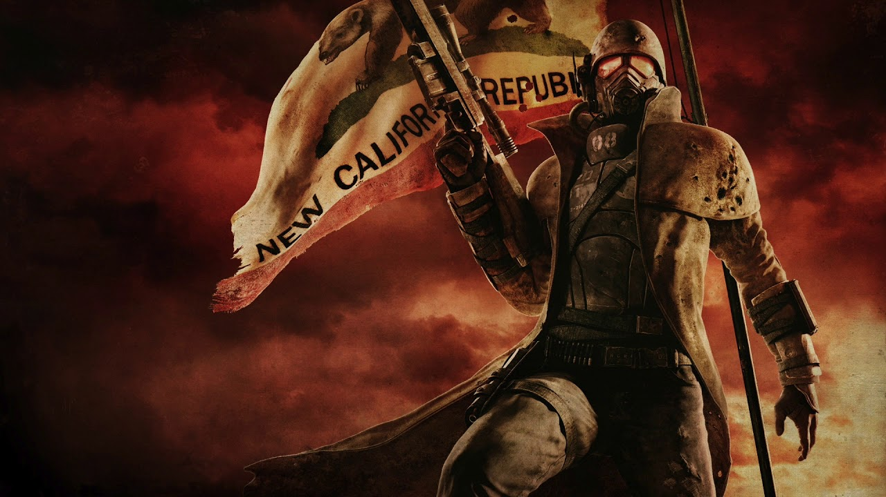

La historia deFallout comienza en 1997 de la mano de Black Isle Studios en el desarrollo e Interplay en la distribución y se encargó de sentar las bases para el resto de la franquicia. Ambientado en un mundo post-apocalíptico.
Para la saga homónima a la que pertenece véase Fallout (serie). Fallout es un videojuego de rol producido por Tim Cain y publicado por Interplay en 1997. Aunque el videojuego se desarrolla en el siglo XXII, la historia y la estética están muy fuertemente influenciados por la paranoia post-nuclear de los años 1950.
En la historia de fallout 4, encarnamos al ultimo superviviente un padre o madre dependiendo de la eleccion del jugador donde con su pareja y su bebe recien nacido Shaun. Son escogidos para entrar en el refugio 111 de la compañia Vault tec, donde la empresa diria que los refugios son para proteger al pueblo americano de la catastrofe nuclear pero que en realidad el gobierno y la compañia tenian como objetivo utilizar los refugios y a sus moderadores como ratas de laboratorio en macabros experimentos.
Después que las primeras bombas explotasen , la familia del jugador va hacia el refugio para encontrarse que solo un par de familias pudieron entrar dejando a la mayoria fuera. Después de eso a todos los moderadores les conducen a unas camaras de criogenizacion , ya que el experimento asignado para ese refugio era que los moderadores se mantengan criogenizados durante 200 años.
Despuésde mucho tiempo nuestro personaje despierta para ver como unos cientificos y un mercenario llamado kellog matan a tu esposo o esposa y se llevan a tu bebe para luego criogenizarte de nuevo. DEspués de unos años el personaje despierta para ver que todos en el refugio han muerto y han secuestrado a su bebe , donde el protagonista jura venganza y que encontrara a su hijo.
Mediante avanzamos en el juego el protagonista conoce diferentes facciones con diferentes maneras de ser e ideales. Donde el protagonista tendra que elegir con quien unirse y decidir el futuro de la Comonwuelth.
Los minutmen son la primera faccion que el protagonista encontrara en su viaje por la Comonwuelth. Si el jugador decide ayudarles, conocera al lider de ellos Preston Garby, junto al pequeño grupo que le acompañan algunos de los personajes son sturges , Mama mercie y otros colonos sin importancia en la historia.El jugador siguiendo su historia les llevara a su asentamiento y hay Preston le pedira ayuda al jugador para poder reconstruir a los minutmen otra vez.
Los minutmen son unos milicianos es decir un grupo de colonos formado por colonos de todos los sentamientos de la Comonwuelth, dedicados a ayudar a todo el que lo necesita.Estos tienen un cadena de rango muy basica donde el lider es el general de los minutmen.
Los minutmen tenian su base principal en el castillo, un castillo reformado y reconstruido. El castillo fue la base de operaciones de los minutmen hasta que un dia una bestia llegaria destruyendo el lugar y matandoa buena parte de ellos , uno de ellos el general que lo podemos encontrar encerrado en la bodega muerto, donde antes de morir de hambre y sez se dio misericordia matandose.
Después de eso se iniciaria la decadencia de ellos, sin un lider los minutmen se disolvieron en pequeños grupos , el ultimo y más grande fue masacrado protegiendo una pequeña ciudad y sus gentes de un grupo de mercenarios. De la ciudad solo escaparian los minutmen que conoce el jugador tiempo después.
Los minutmen solo fueron un grupo de civiles que luchaban por un futuro prospero para todos y ayudaban a quien lo necesitase. Estos intentando que todos los asentamientos se uniesen en un gran grupo crearian el gobierno provisional de la Comonwuelth. Donde antes de ser fundado un synth asesinaria a todos los lideres de los asentamientos destruyendo la ultima esperanza de unir a todas las gentes de la Comonwuelth.
Si el jugador sigue su rama , podra reconstruir a los minutmen , juntando a los asentamientos y haciendo de la Comonwuelthun lugar mejor. Además de destruir al instituto.
Los minutmen eran conocidos por estar listos en un minuto y se consideraban a ellos mismos como unos ciudadanos soldados. Ellos saltaron a la fama por primera vez cuando se libro la batalla de diamond city. Un gran ejercito de supermutantes ataco la ciudad y de la transmision de ayuda muchos colonos desde el más humilde granjero acudieron en la ayuda de la ciudad y sus ciudadanos.
Después de un tiempo de lucha los supermutantes serian derrotados y todos los colonos que acudieron a ayudar en la lucha se convirtieron en los minutmen. Después de eso se conoce que los minutmen intentaron formar un gobierno provisional de la Comonwuelth donde se unirian todos los asentamientos de ella.
Hasta el instituto participo en esta union , pero gracias a los conflictos internos de los minutmen el instituto abandonaria la idea y tiempo después un synth mataria a todos los integrantes del gobierno destruyendo cualquier posibilidad.
El fuerte libertad o el castillo situado en el sur de Bostón fue el cuartel general de los minutmen. Siendo hay su centro de operaciones y posellendo un gran arsenal. En el año de 2240 el castillo seria atacado por una bestia matando a todos los minutmen que estaban en el castillo , junto a su general.
Después de la muerte del ultimo general , las disputas internas por el poder se harian más frecuentes, comenzando la decadencia y disolviendo a los minutmen en pequeños grupos. El ultimo y más grande seria destruido en la defensa de la ciudad de quince por un ataque de artilleros.

El capitulo de la hermandad de la Comonwuelth en el universo de fallout es uno de los más controverciales. Se desecha la idea de recuperar y proteger toda la tegnologia , para convertirla en una ideologia para militar , donde les da igual las bajas civiles y donde haran lo que sea para cumplir con sus objetivos. La hermandad esta en guerra con todos los mutantes y toda alimaña de la Comonwuelth que no sea humano. Ellos tendran una guerra abierta con el instituto ya que para sus ojos los synyh son una amenaza que hay que exterminar y su tegnologia se deberia guardar y no utilizar para esos fines.La hermandad tampoco esta aliada con ningun otra faccion en el juego.
El jugador se encontrara con la hermandad del acero por primera vez, después de matar a Kellog secuestrador de nuestro bebé y asesino de nuestro esposo o esposa. Donde la hermandad llegara por todo lo alto en un gran dirigible escoltado por bertybirds, donde transmitiran un mensaje de paz y que no hay que temer nada. Después de eso el jugador los encontrara en el aeropuerto de Boston que sera su sede principal. El jugador hara misiones para ellas de recuperar tegnologia y limpiar la Comonwuelth para luego destruir al instituto y al ferrocarril. El lider de ellos es el maestre Maxson un ider autoritario que en realidad es un synth del instituo.

La hermandad tiene una compleja cadena de mando y con distintas ramas.
Los escribas son científicos y sabios que pertenecen a la orden y que investigan, clasifican y reparan todo el saber de antes de la guerra. Encontramos tres ordenes dentro de los escribas:
Luego en lo más alto de la organización de la hermandad esta dirigida por un Elder, que viene a ser como el Gran Maestre de la orden. Tras el Elder, está la figura del Protector, que es el segundo al mando. Tras ellos, se encuentra el senescal o senescales del Elder, que toman la función de su líder en caso de que a este le suceda cualquier cosa y no pueda hacerse cargo de sus funciones.

El ferrocarril sera otra de las facciones principales que encontrara el jugador , para llegar a ellos el jugador tendra que reslover un puzzle por las calles de Boston hasta llegar a su base que esta bajo tierra.
Su ideologia se vasa en proteger a los synths que han escapado y se han revelado contra el instituto, ayudandoles a escapar y protegiendoles.Estos basan su organización en informantes y simpatizantes que no están en el Ferrocarril, sus agentes, que se encargan de conseguir informacion de synths
y los agentes de campo son los que se enfrentan directamente contra el instituto. Son la faccion que más imformacion tiene del instituto además que estan en guerra contra ellos.El Ferrocarril utiliza un sistema de símbolos a lo largo de la Commonwealth para comunicarse en secreto asuntos como dónde hay un peligro, un aliado, o suministros.

El protagonista después de ganarse su lealtad y respeto podra hacer el final del ferrocarril que como no es destruyendo al instituto y salvando a los synths. El ferrocarril solo aparece en fallout 3 y 4.
 

El instituto seria la principal faccion antagonista de este juego por diversas razones. El instituto ha esta do atemorizando a la Comonwuelth durante mucho tiempo además de secuestrar al hijo del protagonista.
Cuando el jugador llegue al instituto habra llegada a la recta final del juego , donde descubrira que el lider del instituto no es nada menos que Shaun nuestro hijo pero ahora ya anciano. Shaun nos explicara que después que el instituto junto a kellog que trabajaba para el lo secuestrase con fines de investigación, se unio a ellos el instituto lo crio y después de años se convirtio en Padre el lider del instituto.
El Instituto nació a partir del Instituto Tecnológico de la Commonwealth, o CIT por su acrónimo en inglés, una universidad de renombre ubicada en Boston, Massachusetts. Robert House asistió en su juventud. Durante la Gran Guerra, una parte del personal del CIT sobrevivió tomando refugio en el nivel subterráneo del campus. En 2110, los supervivientes y sus descendientes fundaron el Instituto, una organización dedicada a avanzar en la ciencia de la pre-Guerra.
En sus primeros días, ya que la primera generación de synths estaba siendo creada, el Instituto buscó ayudar a la gente de la Commonwealth en la reconstrucción de la civilización, pero la desconfianza mutua destruyó rápidamente esa alianza. Fracasando en cualquier intento de cooperación con la superficie, el Instituto se retiró a las sombras, adoptando un nuevo propósito: aniquilar hasta el último rastro de la cultura de la pre-Guerra a la que culpaban por acabar con el mundo, y recrear la superficie a su propia imagen, basada en sus ideas de una sociedad utópica.
Las primeras generaciones de synths serian utilizadfas en misiones del recoleccion de recursos , asi eran teletransportados a la Comonwuelth gracias a esto los primeros conflictos entre synths y humanos comenzaron creando el miedo hacia ellos.
Pero no seria hasta la tercera generacion de synths donde el miedo creceria , con el fin de hacer que los synths sean identicos a los humanos el instituto enviaria a su mejor mercenario kellog y un par de cientificos al refugio 111 donde encontrarian algun humano criogenizado es aqui donde fallout 4 comienza donde matan a nuestro esposo o esposa y secuestran a Shaun.
Donde se desvela que gracias a Shaun se pudo crear la tercera generacion de synths. Aqui empezaria el terror para los habitantes de la Commonwealth ya que gracias a que ahora que los synths eran iguales a los humanos. Estos tendrian su primer contacto en el incidente de Diamond city de la mascara remonta,
desde ese incidente la paranoia de que el instituto secuestraba y remplazaba a las personas. Que luego esto se haria realidad ya que los comenzaron a utilizar para infiltrarse en comunidades y saboteandolas. Desde entonces la idea de que cualquier amigo , familiar o humano podria ser un synth se extenderia por toda la Commonwealth. Un ejemplo seria que sturges , el alcade de Diamond city , el maestre maxson y un monton de personajes y compañeros más son synths.
De aqui tambien saldria la teoria de que hasta el verdadero protagonista es un synth.

En la historia de fallout 76 encarnamos a uno de los habitantes del refugio 76 situado en virginia occidental , este es uno de los pocos refugios de control es decir que no tenian asignado ningun experimento. El objetivo de este refugio era que después de 20 años los habitantes saliesen pero por problemas tecnicos se tuvo que atrasar 5 años. En appalachia asi se llama en mapa , tendremos que averiguar que les paso a las facciones que habitaban la region y a los supervivientes ya que parece que una extraña plaga llamada la plaga calcalcinada, que matoa todos los supervivientes de la gran guerra convirtiendoles en calcinados. Segun avancemos en el juego iremos descubriendo distintas facciones desde los humildes protectores hasta el misterioso enclave descubriendo más de la plaga y al final enfrentandonos a la bestia calcinada lider de los calcinados.
 

Los protectores son la primera faccion que encontraremos en la historia de fallout 76. Los protectores fue un grupo formado por policias , bomberos , medicos y voluntarios que después de la gran guerra se quedaron a ayudar a los supervivientes. Dandoles camas , comida , medicinas , suministros y hasta entrenaban a los supervivientes sobre tecnicas de supervivencia.
Esta faccion seria aniquilada los la plaga calcinada hasta que después de un tiempo , cuando appalachia fuese repoblada otra vez gente tomaria la mentalidad de los protectores y se dedicaria a crearlos otra vez. Ahora podemos encontrar a unos nuevos protectores como base principal el hotel de white springs ayudando a los habitantes de appalachia y a los refugiados de The Pitt.
Ya que con esta faccion el moderador del refugio podra viajar a The Pitt realiando a misiones y ayudando a La union en su guerra contra los fanaticos.
Cuando la plaga calcinada comenzo los protectores hacian caso omiso de las advertencias de la hermandad de acero sobre los calcinados y la bestia calcinada. Hasta que ya era demasiado tarde los protectores desarrollaron una vacuna contra la plaga pero demasiado tarde ya que el laboratorio donde se creo fue atacado por los calcinados destruyendo la ultima oportunidad. Si los protectores hubiesen hecho caso a la hermandad sobre la plaga y hubiesen unido fuerzas igual podrian haber vencido a la plaga pero por su desconfianza a la hermandad y la diferencia de ideologias les llevaron a su fin.
Los protectores fueron unos voluntarios que ofrecian ayuda y proteccion a todo el que lo necesitase pero gracias a la desconfianza que ellos tenian ante la hermandad les llevaria a su ruina y destruccion pero dejando un gran legado.

Los saqueadores se formaron después de la caida de las bombas, formados por turistas y otras gente tienen su base en la cima del mundo. Los saqueadores se formaban por 5 bandas que llegaron a una alianza para no atacarse entre si. Ellos estuvieron atemorizando appalachia durante un tiempo y estando en guerra contra los protectores. Ahora de ellos solo quedan cadaveres y sus robots como Rose que realizaremos algunas misiones para ella.


La Hermandad del Acero es una organización tecno-religiosa, formada por desertores del Ejército de los Estados Unidos durante los últimos momentos de la gran guerra. Su objetivo es la recopilación del conocimiento y de la tecnología para poder reconstruir el mundo.
El capitulo de la hermandad del acero en appalachia, fue formada por un grupo de rangers del ejercito de los estados unidos. Donde cuando cayeron las bombas estarian haciendo maniobras en la region , haciendo que se refugien de ellas. Los supervivientes tiempo después contactarian con el elder Roger Maxson que les explicaria que habian descubierto en la base militar mariposa y que detras de todo estaba el gobierno , el enclave y Vault Tec. Cuando termino de explicarlo todo Roger Maxson les convenceria de unirse a la hermanda creando asi al capitulo que conocemos. Estos serian los primeros que descubririan a las bestias y la plaga además que ellos estarian luchando contra ellos en primera linea. La hermandad tendria su base en el fuerte resistencia un antiguo manicomio cerca de watoga. Ellos tendrian acceso a mucha tegnologia como defensas anti aereas , servoarmaduras , etc... Estos tendrian una relacion complicado con los protectores ya que habia una gran desconfianza entre ellos por sus diferentes ideologias. La hermandad siempre tuvo contacto con Roger Maxson (En California.) Estos al descubrir la plaga habisaron al resto de facciones pero la mayoria harian oidos sordos hasta que fue demasiado tarde. La lider de este capitulo llamada Traggerdy solo veria una unica solución para vencer a la plaga usar el arsenal nuclear de white springs para vencer a los calcinados. Esta lideraria un ataque hacia la caberna de cristal hogar de las bestias calcinadas para ganar tiempo pero todo esto fue en vano. Todos que fueron murieron y desde hay entrarian en un declibe hasta la ultima batalla en el fuerte resistencia donde moririan todos.
En el dlc de wastelamders una avanzada enviada desde California por Roger Maxson , ya que habian perdido el contacto con el capitulo de appalachia. Se estableceria en el fuerte atlas un observatorio con el la hermandad volveria a estar en appalachia y se enfrentaria a nuevas amenazas junto al jugador.

El enclave es una organizacióm para militar formada por todos los miembros corruptos del gobierno estado unidense , senadores , militares etc... Ellos se dieron cuenta de la inminente guerra nuclear asique comenzaron a prepararse para que los miembros pudiesen sobrevivir .Es asi como sus instalaciones estuvieron protegidas contra el bombardeo nuclear. Ellos son los causantes de los experimentos de los refugios , ya que estos fueron financiados por el gobierno y proteger a los ciudadanos era solo una tapadera para ocultar el verdadero objetivo que era experimentar con los habitantes de estos poniendolos en distintos escenarios ya que el enclave usaria la imformacion de estos experiementos para luego irse y colonizar otro planeta dejando a atras a todo el planeta. Estos depués de una serie de circunstancias abandonarian el objetvo de colonizar otro planeta pero seguirian monitoreando los refugios.
En virginia occidental el enclave estaria tambien presente, con su base principal el bunker de whitesprings estos serian los causantes de la mayoria de las amenazas , como las bestias calcinadas , super mutantes etc... Ya que su lider Thomas Edgar el exsecretario de agricultura del gobierno estado unidense, queria usar los asilos nucleares presentes en appalachiapara bombardear otra vez china y exterminar el comunismo de una vez por todas. Pero no podria ya que para activar los silos se necesitava un nivel de alerta defcon uno , asique para conseguirlo crearia y liberaria por toda applachia muchas alimañas y mutantes para que el nivel de alerta subiera. Pero antes de conseguirlo dentro del bunker habria una guerra civil ya que no todos estaban de acuerdo con los pensamientos de Thomas. Es asi como la guerra civil mataria a todos solo dejando con vida robots y una IA llamada Nodus.
En la historia de new vegas encarnaremos a un empleado del mojave exprex que tiene que entregar un chip de platino en el strip para el señor house pero antes de llegar un tio llamado Benny nos secuestrara robandonos el chip y diparandonos en la cabeza enterrandonos. Pero gracias a nuestra suerte logramos sobrevivir ahora en busca de venganza el personaje se ira por todo el mojave enterandose de los conflictos politicos entre la rnc y la legion de cesar dondeel tendra que ayudar a elegir el destino de todo el mojave.
Todo comenzo con la creación de shandy sands , este asentamiento fue credo por moradores del refugio 15, mientras el resto de los moradores formaron bandas de saqueadores. Con un tiempo el asentamiento prospero. Pero aun así había problemas ya que los kans una tribu de saqueadores (formada también por los moradores del refugio 15) atacaría la aldea secuestrando la hija de líder. Aunque después de la ayuda del morador del refugio 13 que derroto a los kans y el asentamiento al mando de Aradesh se volvería shandy sands en la potencia económica del sur de california. Entre el 2186-2241 la república se formaria uniendo en una misma bandera a varios asentamientos creando 5 estados:
Después de la muerte de Aradesh su hija tomaría el puesto, donde con su gobierno de varias décadas, estabilizó las regiones eliminando saqueadores, reconstruyo infraestructura de antes de la guerra y empezó una expansión pacífica.
Cuando el enclave fue destruido, la rnc decidió expandirse hacia el norte, contratando mercenarios y siniestrándoles armas para que hostiguen a las comunidades.
Esto dio sus frutos haciendo que varios asentamientos donde se incluían vault city se unirían a la república para que los protegieran. Además de esto crearon 3 nuevos estados vault city , redding y new arroyo. A new Reno les dieron un trato especial ya que les habían dado ayuda a financiar los mercenarios.
La rnc y la hermandad habían hecho una alianza para acabar por fin con el enclave. Es así como los ejércitos de la rnc y la hermandad marcharon a la base militar de navarro. Ganando estos la batalla, pero es ahí donde se comenzaría la decadencia de las relaciones ya que la rnc se quedaría con la base y sus bertybirds algo que la hermandad no quería. Después de una serie de eventos la guerra estallaría donde en un principio ganaría la hermandad, pero gracia a la superioridad numérica de la rnc , harían a la hermandad retroceder. Después de esto la hermandad usaría tácticas de guerrilla destruyendo las minas de oro de la rnc destruyendo su economía, pero aun así perderían la guerra encerrándose en sus búnkeres.

Después de unos años, la rnc tuvo la idea de expandirse hacia nevada más concretamente al mojave donde informaron que la presa hoover a un estaba en buen estado y se podría usar además de que la ciudad de las vegas parecía intacta a las bombas,
los exploradores describieron a la ciudad como la ciudad que no fue afectada por la guerra. Cuando las tropas llegaron a la presa se encontrarían con los securitrons de Mr house.
Donde harían un trato con este ellos se quedarían la presa si ofrecían seguridad y energía al strip y mr house dejaría a los ciudadanos de la rnc entrar al strip y les dejaría la presa.
Pero no todo sería tan bonito ya que se descubriría un gran enemigo, el unico enemigo que podría luchar y ganar a la rnc mano a mano. La legión de cesar formada por 86 tribus todas estas conquistadas. Formando un vasto ejército.
La rnc llegaría a una guerra directa con la legión después de una serie de eventos donde llevaría a una de las primeras batallas importantes la de la presa hoover. Donde todas las tropas de la legión la atacarían. Los soldados de la rnc no se vieron atemorizados y mantuvieron la posición en medio de la presa donde gracias a los francotiradores que tenían lograron matar a los altos mandos del ejército obligando a la legión a mandar a sus veteranos. Cuando eso paso las tropas supervivientes de la rnc huyeron hacia su parte del rio colorado donde las tropas de la legión les seguirían hasta una trampa explosiva en bulder city. Ahora con casi todas las tropas de la legión muertas la rnc dirigiría una contra ofensiva donde recuperaría la presa.
En resumen, la rnc es un grupo formado por varios asentamientos, ellos son una democracia, pero donde tienen una gran corrupción. Donde gracias a sus ideales expansionistas y su desgastada economía no podrían mantener muy bien a su ejército.
Cabe recalcar que los rangers eran un cuerpo de élite de la rnc estos tuvieron mucha importancia en la lucha contra la legión.

Edwards Salou nació en la republica de nueva california donde después que su padre fuese asesinado, su madre y él se unirían a los seguidores del apocalipsis donde después de unos años a este se le asignaría la misión de ir al gran cañón para estudiar las lenguas de las tribus de este. Es así como Edward y un grupo de los seguidores.
Al llegar a Arizona conocerian a Joshua Graham un misionero Borbon que se les uniria como traductor para hablar con las tribus de la zona. Es así que cuando llegaron al gran cañón serian capturados por la tribu de los pies negros. Edward enfadado porque iba a morir por una tribu insignificante les enseñaría a usar armas y les ayudaría a vencer al resto de tribus del gran cañón. Después de enseñarles Edward y Graham liderarían el ataque a otra de las tribus más débiles los Ridgers.
Estos ejecutaron a todos los mienbros incluyendo mujeres y niños por órdenes de Edward. Luego el siguiente objetivo sería otra tribu los Kaibabs que gracias a la guerra sicologica pudieron conquistar a los Kaibabs sin usar la fuerza. Es asi como poco a poco todas las tribus del gran cañón caerían en manos de los pies negros y Edward.
Edward se convertiría en Cesar y Graham su mano derecha. Este mataría todos sus compañeros de los seguidores menos a uno que lo mandaría de vuelta para advertir a la RNC de no interferir.
Asi es como empezaría una campaña por Arizona.
Después de un tiempo establecerían la capital en Flagstaff, estos tendrían una guerra contra los rangers del desierto. Donde estarían en guerra durante varios años. Donde los rangers contendrían a la legión hasta que por los grandes números de esta serian obligados a retirarse a nevada. En este punto la legión ya había conquistado 66 tribus en Arizona, sur de Utha y el oeste de nuevo México.

La RNC en su expansión hacia el este, tendría el primer contacto con la legión donde al principio no tendrían un conflicto directo. Donde la RNC crearía en fuerte Aradesh en Arizona es decir dentro del territorio de legión. Durante todo este tiempo pequeñas escaramuzas se produjeron en las orillas del rio colorado. Hasta que Cesar ordenaría destruir el fuerte Aradesh y declarando la guerra.
Es aquí donde la republica mandaría sus tropas a pelear con la legión. Para después que se produjera la primera batalla por la Presa hoover donde Graham confiado por su gran numero ordeno un ataque directo y en fila india. Es así como después de un arduo combate en el medio de la presa y donde los francotiradores de esta matarían a los oficiales haciendo que los reclutas entrasen en caos. Graham fue obligado a mandar sus veteranos donde después de ver como las tropas de la república huían estos los siguieron cayendo en una gran trampa explosiva. Es así como la RNC haría una contraofensiva recuperando la presa.
Después de la derrota Graham seria quemado vivo y tirado por el gran cañón. Además que la legión se concentraria en recuperarse invadiendo así a todo Nuevo México. Para luego hacer una campaña en Colorado.
En el oeste Cesar usaría tácticas de guerrilla evitando en conflicto abierto, cortando líneas de suministros y realizando sabotajes.
La estructura de esta estaría centrada en Cesar, que además este tiene un tumor cerebral.